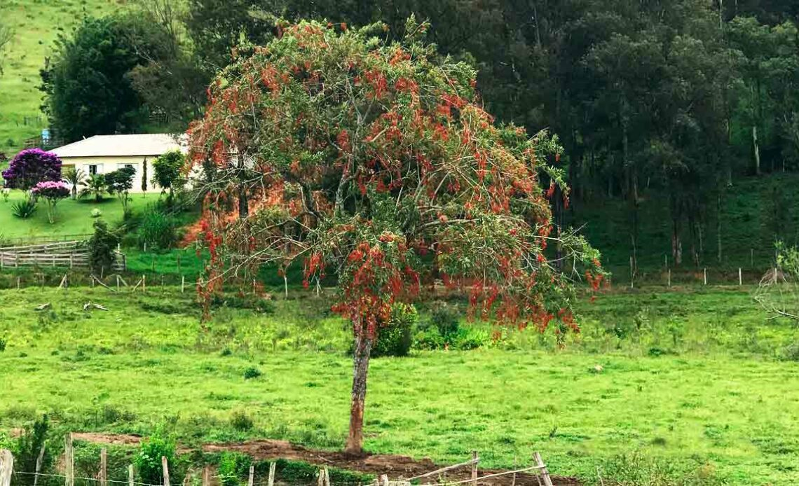

muda da arvore pau-viola
Pau-viola: Informações Gerais
Nome Científico
Cytharexyllum myrianthum
Tamanho
Atinge entre 8 e 15 metros de altura, podendo chegar a 25 metros em algumas regiões.
Folhas
Folhas simples, ovaladas, verde-escuras e brilhantes, dispostas de forma oposta nos ramos.
Flores
Pequenas flores brancas e perfumadas, que atraem abelhas e borboletas.
Frutos
Frutos globosos e alaranjados, dispersos por aves.
Madeira
Densa e resistente, utilizada em móveis e construção civil.
Habitat
Cresce em matas ciliares e florestas densas, preferindo solos ricos e bem drenados.
Tolerância
Tolerante a diferentes climas, prefere ambientes úmidos e tropicais.

Arvore pau-viola